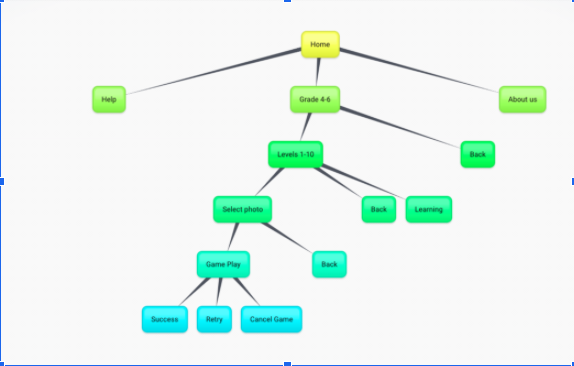

This project was created as a solution for children from grades four to six as an interactive learning object to assist students during their intermediate learning phase with mental arithmatic. The game is availible on both the computor and ipad and provides the user with entertainment and encouragment.
To find your page, select your year level. If this year level is too easy or hard for you try going one up or down. As you progress in year levels, the equations get more difficult:
Year 4 (addition and subtraction) randomly generated numbers between 1 and 80.
Year 5 (addition and subtraction) randomly generates numbers between 1 and 200 Year 5 (multiplication and division) randomly generates numbers between 5 and 13.
Year 6 (addition and subtraction) randomly generates numbers between 1 and 600 Year 6 (multiplication and division) randomly generates numbers between 1 and 20.
If on the highest levels. It is also randomly chosen whether addition, subtraction, multiplication or division will be chosen.
Once you have selected the year which best suits you, you can choose your level which can increase or decrease the difficulty of the game, or the learn button where you get example equations to help learn the maths faster.
If you select to play the game, you will get to choose from a selection of puzzles. Once one is selected, it will take you to the game play page.
In this page, you must drag a piece to the dedicated spot. Once you do this, you will be given an equation to answer. If you get this equation right, the piece will lock into place. If not, the piece will return to the sorting area.
